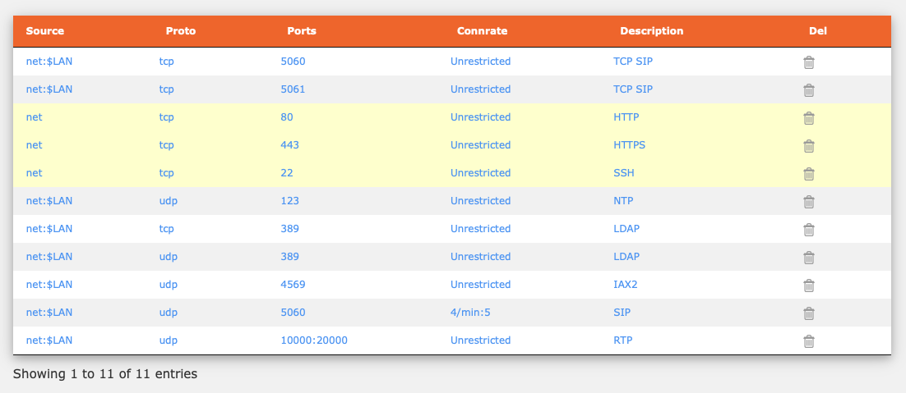

Firewall setup#
Here is the firewall from a newly installed system

Any cell rendered in blue can be inline edited by clicking on it and modifying the contents. Once done, click away (i.e. outside the edit box.)
Source#
Source will always begin net. If you type nothing else than this rule will be worldwide accessible (so be careful with it). To narrow the permission, follow net with a colon (net:) and then a source. The source can be specified in CIDR format or as an absolute IP address.
So, if you wanted to restrict access to a rule from IP address 5.5.5.5 (and ONLY 5.5.5.5), then you could code
net:5.5.5.5
or
net:5.5.5.5/32, which is the same thing.
There is a special value, $LAN, which restricts access from your local subnet (e.g. 192.168.1.0/24)
net:$LAN
Protocol#
This is a dropdwon which can either udp or tcp
Ports#
This can be a single port, mutiple ports (separated by commas) and/or a port range (separated by a colon). So, for example to handle SIP/RTP UDP you might code
5060,10000:20000
This would handle both SIP (5060) and RTP range (10000:20000)
Rate#
This controls the connection rate of an endpoint. It is specified as the maximum number of allowed connections per time unit. So, the rule 4/min:5, in the default SIP (5060) rule, allows a burst of 5 connections per source IP and 4 connections per minute. You can find full details of this in the Shorewall docs.
Description#
This ia a freeform description strin which yu can include next to the rule. Use plain language without special characters, e.g. SIP from the London Office